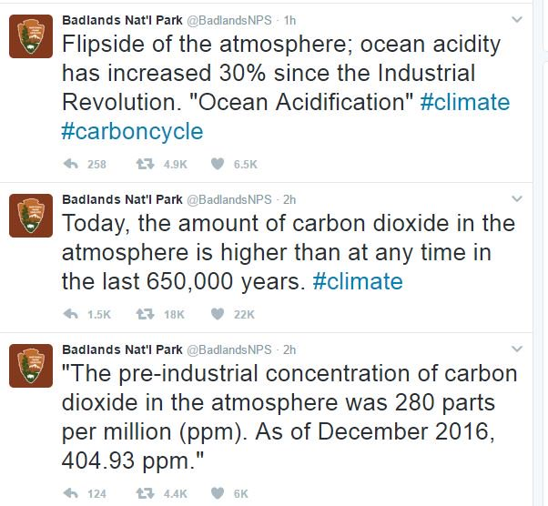

Stand with Government Scientists
Canadians got to see the damage an anti-science government could do when Stephen Harper was Prime Minister. His government scrapped the long-form national census, threw out entire libraries’ worth of scientific data, and did everything else it could to make informed debate about key policy issues impossible. It’s an effective tactic—if the facts are on your opponent’s side, get rid of them, so that the debate becomes your word against theirs—but the long-term damage to both science and the country is immense.
Earlier this week, the Trump Administration started its own war on science by banning staff at the Enviromental Protection Agency, the Department of Agriculture, the Department of Health and Human Services, and other science-related agencies from talking directly to the press. Not content with that, Trump has nominated a climate change denialist to be the EPA’s new boss, and ordered a “temporary suspension” of its grants, effectively stopping the agency and those it supports in their tracks.
In response, a National Park Service employee put their job on the line by tweeting a few simple, verifiable facts about the greatest threat our species currently faces. We don’t yet know who they are, or what reprisals will be taken, but I stand with them, and with every other scientist who may now be at risk simply for trying to tell the truth.
